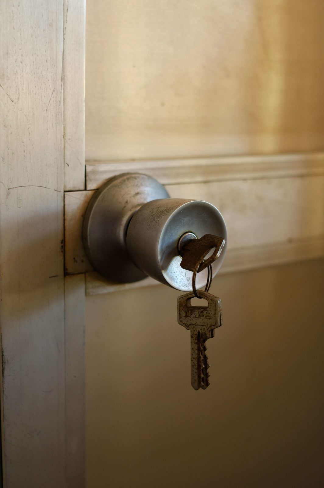
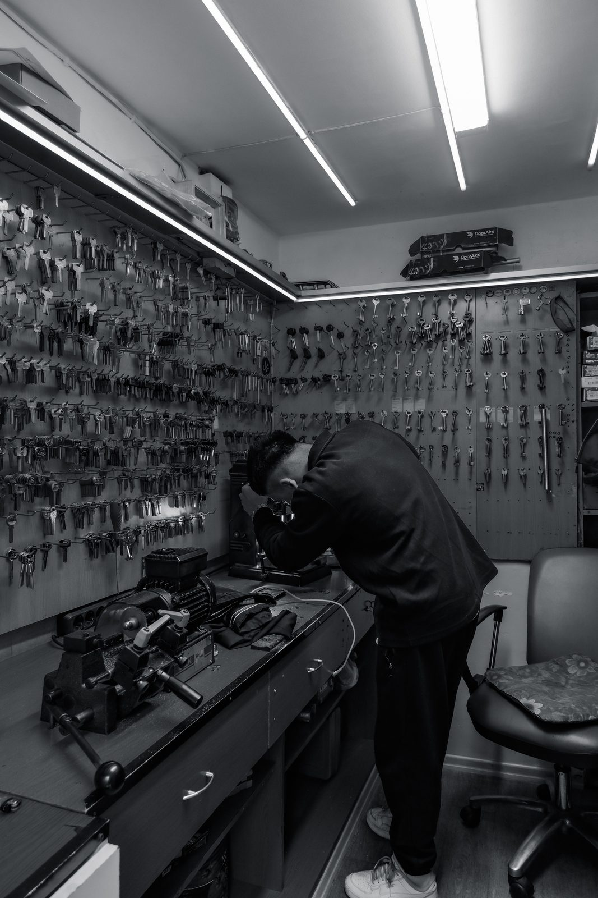

Rekey vs. Replace Your Locks: Which Do You Actually Need?

Rekey or replace? It usually comes down to whether the problem is the keys or the hardware.
Here's the short version: rekeying keeps your existing locks but changes the internal pins so old keys no longer work — it's cheaper and fast. Replacing swaps out the whole lock for a new one — more expensive, but the move when a lock is worn, broken, or you want to upgrade its security. If your locks work fine and you just want old keys to stop working, rekey. If the hardware is old, failing, or you want something stronger, replace. Here's how to tell which is right for your situation.
Not sure which you need? Call (405) 870-5397 and we'll tell you straight.
Call Now — (405) 870-5397Quick comparison
Swipe the table sideways to see both columns →
| Rekey | Replace | |
|---|---|---|
| What happens | Pins inside the lock are changed so old keys stop working | The entire lock is swapped for a new one |
| Keeps your existing hardware | Yes | No |
| Typical cost* | Lower — mostly labor | Higher — labor + new hardware |
| Best when | Keys are floating around; you moved in; you lost a key | Lock is worn/broken, or you want an upgrade |
| Can match all locks to one key | Yes | Yes |
*Your exact price depends on how many locks and the hardware. We quote it up front.
What does rekeying actually do?

Rekeying changes the little pins inside your existing lock cylinder so your old key no longer works — and a new key does. The lock itself stays on the door. It's the right call when the lock is in good shape and the real issue is who has a key. Because it's mostly labor and a few parts, it's the cheaper, faster option — and we can usually rekey multiple locks to work off one single key while we're there.
When should you replace instead?
Replace the lock when the hardware itself is the problem, or when you want more than your current lock offers:
- It's worn or failing — sticky, loose, hard to turn, or the key barely works.
- It was forced or damaged — after a break-in or attempted entry.
- You want an upgrade — a higher-security deadbolt, a bump-resistant cylinder, or a smart lock.
- It's just old — decades-old hardware that's past its life.
If the lock is fine and you only care about keys, replacing is spending money you don't need to. But if the lock is the weak point, a rekey just puts new pins in old hardware.
The move-in and turnover situations
The most common reason people call us for this: you don't know who has a key. In those cases, rekey first, replace only what's worn:
- Just bought or rented a home — the previous owners, their kids, the realtor, contractors, and who-knows-who may still have working keys. Rekey everything to a fresh key you control.
- Tenant moved out — rekey between tenants; it's cheaper than new hardware every turnover.
- Employee left — for a business, rekey so that former staff keys are dead. (If keys walk off often, that's where a smart or restricted-key system pays off.)
- Lost a key — if you don't know where it is, rekey so a found key can't open your door.
So which is cheaper?
Rekeying is almost always cheaper than replacing, because you're paying mostly for labor instead of labor plus new hardware. That's why, for move-ins and turnovers where the locks still work, rekeying is the smart money. You only pay for replacement where the hardware actually needs it — and we'll tell you honestly which locks fall in each bucket before we start.
We cover homes and businesses across the OKC metro and come to you. We'll walk the doors, tell you what to rekey and what to replace, and quote it up front.
Rekey, replace, or one key for everything? Call (405) 870-5397.
Call Now — (405) 870-5397Frequently Asked Questions
Is it cheaper to rekey or replace locks?
Rekeying is almost always cheaper, because you keep your existing hardware and pay mostly for labor. Replacing costs more because you're buying new locks plus the labor to install them.
Should I rekey or replace locks after moving into a new house?
Rekey, in most cases. The locks usually work fine — the real issue is that people from before may still have keys. Rekeying gives you a fresh key you control, and it's cheaper than replacing everything. Replace only the locks that are actually worn or damaged.
Can you make all my locks open with one key?
Yes. Whether we rekey or replace, we can set all your locks to work off a single key — a lot more convenient than carrying a different key for every door.
How long does rekeying take?
Most homes are a quick job — we rekey the locks on-site in one visit. The exact time depends on how many doors you have.
When is replacing the lock the better choice?
When the hardware is worn, broken, forced in a break-in, or you want to upgrade to higher-security or a smart lock. If the lock is the weak point, new pins in old hardware won't fix it.